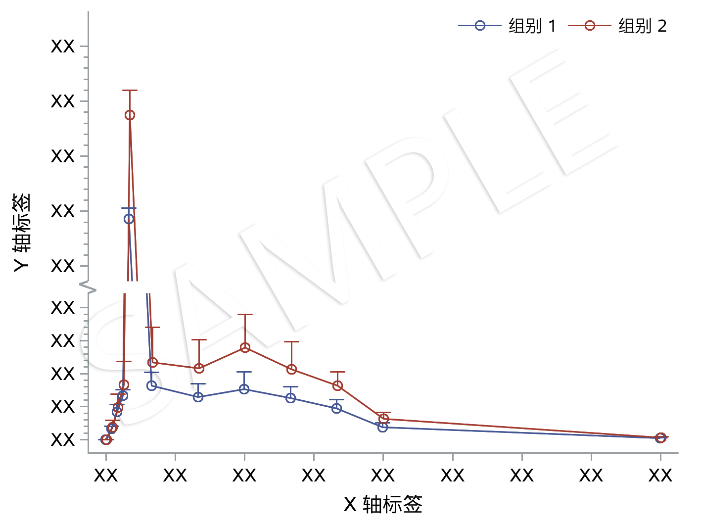

<简介>
| 名称 | 类型 | 描述 |
X=<var> | 必需参数 | X 轴变量 |
Y=<var> | 必需参数 | Y 轴变量 |
CLASS=<var> | 可选参数 | 分组变量, 未指定时, 全部数据被视为属于同一组别 |
XMIN=<num> | 可选参数 | X 轴最小刻度值, 刻度值相关参数未指定时, 程序使用内部算法计算 |
XMAX=<num> | 可选参数 | X 轴最大刻度值 |
XINC=<num> | 可选参数 | X 轴分度值 |
YMIN=<num> | 可选参数 | Y 轴最小刻度值 |
YMAX=<num> | 可选参数 | Y 轴最大刻度值 |
YINC=<num> | 可选参数 | Y 轴分度值 |
YSTD=<str> | 可选参数 | Y 轴变量标准差 |
YLST=<str> | 可选参数 | Y 轴刻度值列表 |
YRANGE=<str> | 可选参数 | Y 轴显示范围, 不在范围内的图形主体将体现为断轴 |
断轴范围. YRANGE 的设置应考虑略微超出断轴处的 Y 轴刻度值, 以免刻度值在断轴处拥挤
SAS 9.4M7
| 修订日期 | 修订者 | 描述 |
| 2026-11-19 | 罗浩 | 初稿 |